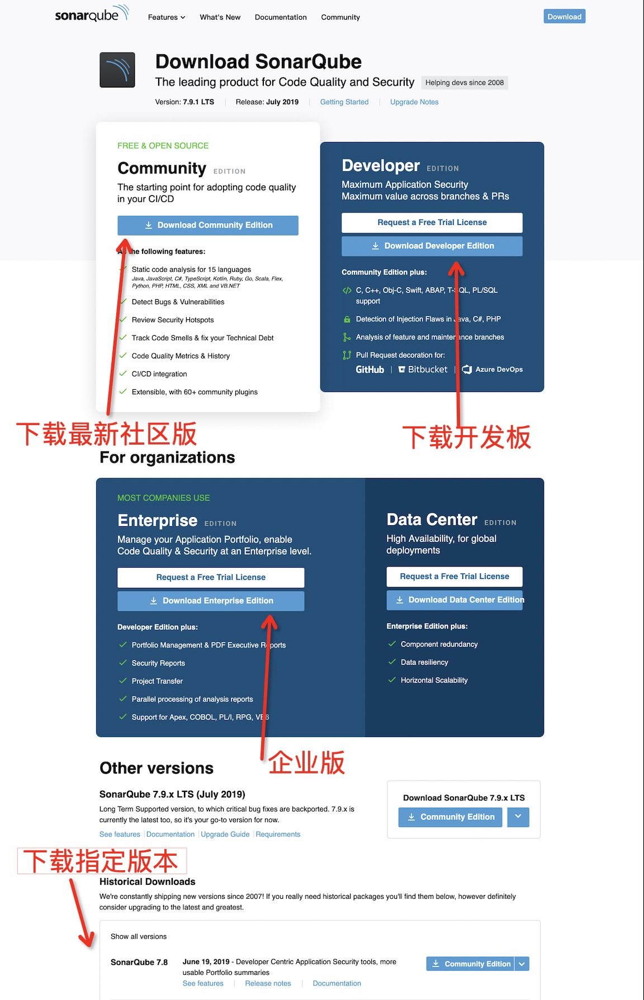
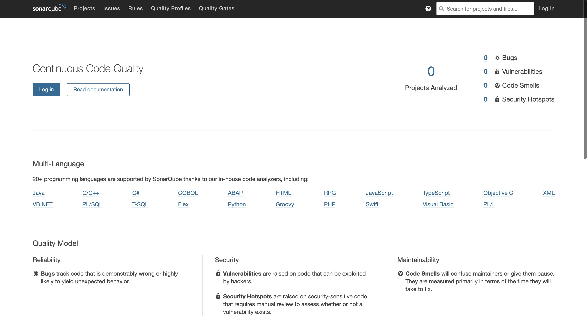
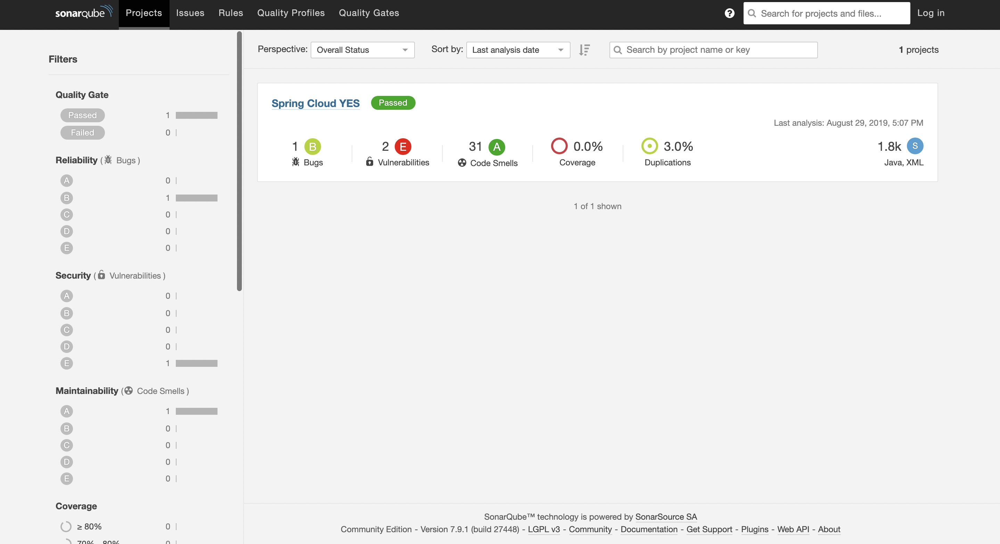
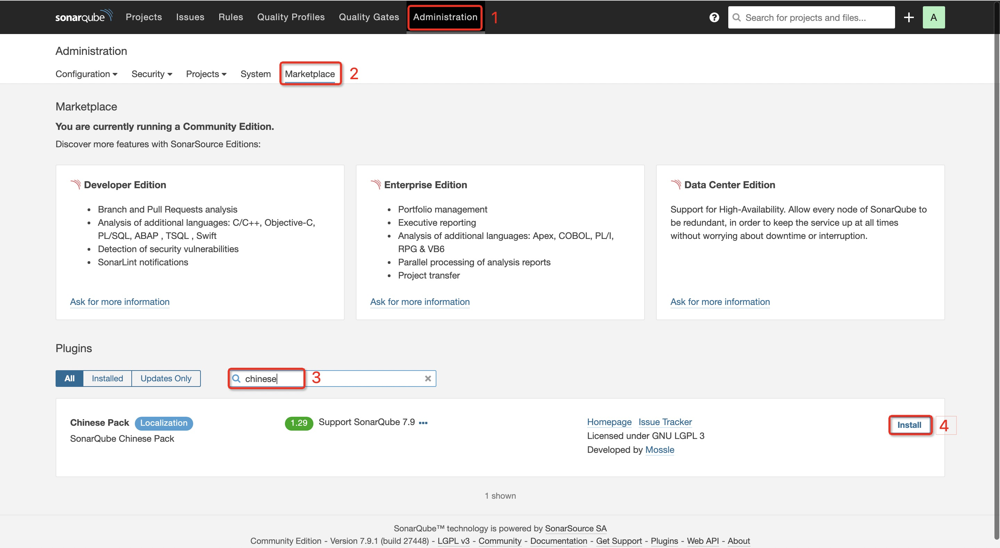
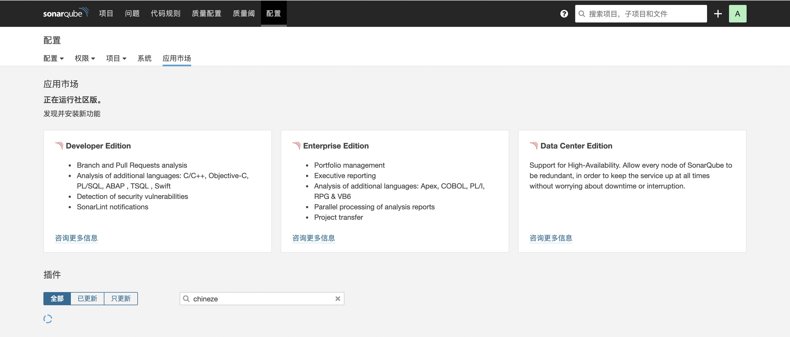

<!DOCTYPE HTML>
<html lang="zh-CN">
<head><meta name="generator" content="Hexo 3.8.0">
    <!--Setting-->
    <meta charset="UTF-8">
    <meta name="viewport" content="width=device-width, user-scalable=no, initial-scale=1.0, maximum-scale=1.0, minimum-scale=1.0">
    <meta http-equiv="X-UA-Compatible" content="IE=Edge,chrome=1">
    <meta http-equiv="Cache-Control" content="no-siteapp">
    <meta http-equiv="Cache-Control" content="no-transform">
    <meta http-equiv="pragma" content="no-cache">
    <meta http-equiv="Cache-Control" content="no-cache, must-revalidate">
    <meta http-equiv="expires" content="Mon Apr 06 2020 02:12:38 GMT+0800 (CST)">
    <meta name="renderer" content="webkit|ie-comp|ie-stand">
    <meta name="apple-mobile-web-app-capable" content="周立的博客 - 关注Spring Cloud、Docker">
    <meta name="apple-mobile-web-app-status-bar-style" content="black">
    <meta name="format-detection" content="telephone=no,email=no,adress=no">
    <meta name="browsermode" content="application">
    <meta name="screen-orientation" content="portrait">
    <meta name="theme-version" content="1.2.3">
    <meta name="root" content="/">
    
    <!--SEO-->

    <meta name="keywords" content="其他,SonarQube">


    <meta name="description" content="
TIPS
本文基于SonarQube 7.9.1，理论支持6.0及更高版本。

SonarQube是一个开源的代码质量管理系统，可用来快速定位代码中的Bug、漏洞以及不优雅的代码。它支持几乎所有的常见编程语言，例如Java、JavaScript、TypeScript、Kotlin、Ruby、...">


<meta name="robots" content="all">
<meta name="google" content="all">
<meta name="googlebot" content="all">
<meta name="verify" content="all">
    <!--Title-->


<title>手把手使用SonarQube分析、改善项目代码质量 | 周立的博客 - 关注Spring Cloud、Docker</title>


    <link rel="alternate" href="../../atom.html" title="周立的博客 - 关注Spring Cloud、Docker" type="application/atom+xml">


    

    


<link rel="stylesheet" href="../../static/css/bootstrap.min-271a649e0635d6fa1b.css">
<link rel="stylesheet" href="../../static/css/font-awesome.min-ac2bebcf7fb5b26.css">
<link rel="stylesheet" href="../../static/css/style-6f3c140f6eee20e6591da00ec0.css">


    


    <script>
        var _hmt = _hmt || [];
        (function() {
            var hm = document.createElement("script");
            hm.src = "https://hm.baidu.com/hm.js?13766878cde148282622871dd245a973";
            var s = document.getElementsByTagName("script")[0];
            s.parentNode.insertBefore(hm, s);
        })();
    </script>


    

</head>

</html>
<!--[if lte IE 8]>
<style>
    html{ font-size: 1em }
</style>
<![endif]-->
<!--[if lte IE 9]>
<div style="ie">你使用的浏览器版本过低，为了你更好的阅读体验，请更新浏览器的版本或者使用其他现代浏览器，比如Chrome、Firefox、Safari等。</div>
<![endif]-->

<body>
    
    <nav class="main-navigation">
    <div class="container">
        <div class="row clearfix">
            <div class="col-md-12 column">
                <nav class="navbar navbar-default" style="background-color:#fff;border:0;margin-bottom:0" role="navigation">
                    <div class="navbar-header">
                        <button type="button" class="navbar-toggle" data-toggle="collapse" data-target="#navbar-collapse-1">
                            <span class="sr-only">切</span>
                            <span class="icon-bar"></span>
                            <span class="icon-bar"></span>
                            <span class="icon-bar"></span>
                        </button>
                        <a class="logo" href="../../index.html">
                            周立的博客
                        </a>
                    </div>

                    <div class="collapse navbar-collapse" style="border:0;" id="navbar-collapse-1">
                        <ul class="nav navbar-nav">
                            
                                
                                    <li>
                                        <a href="../../about.html" target="_blank">
                                            <i class="fa fa-user"></i>
                                            关于我
                                        </a>
                                    </li>
                                
                            
                                
                                    <li>
                                        <a href="../../archives.html" target="_blank">
                                            <i class="fa fa-archive"></i>
                                            归档
                                        </a>
                                    </li>
                                
                            
                                
                                    <li class="dropdown">
                                        <a href="#" class="dropdown-toggle" data-toggle="dropdown" data-hover="dropdown">
                                            <i class="fa fa-fire"></i>
                                            系列课程
                                            <strong class="caret"></strong>
                                        </a>
                                        <ul class="dropdown-menu">
                                            
                                                <li>
                                                    <a href="../../docker/00-docker-lession-index.html" target="_blank">
                                                        <i class="fa "></i>
                                                        Docker系列教程
                                                    </a>
                                                </li>
                                            
                                                <li>
                                                    <a href="../../spring-cloud/spring-cloud-index.html" target="_blank">
                                                        <i class="fa "></i>
                                                        Spring Cloud系列教程
                                                    </a>
                                                </li>
                                            
                                                <li>
                                                    <a href="../../spring-boot/spring-boot-index.html" target="_blank">
                                                        <i class="fa "></i>
                                                        Spring Boot系列教程
                                                    </a>
                                                </li>
                                            
                                        </ul>
                                    </li>
                                
                            
                                
                                    <li class="dropdown">
                                        <a href="#" class="dropdown-toggle" data-toggle="dropdown" data-hover="dropdown">
                                            <i class="fa fa-book"></i>
                                            开源书
                                            <strong class="caret"></strong>
                                        </a>
                                        <ul class="dropdown-menu">
                                            
                                                <li>
                                                    <a href="../../books/rocketmq.html" target="_blank">
                                                        <i class="fa fa-rocket"></i>
                                                        RocketMQ开发者指南
                                                    </a>
                                                </li>
                                            
                                                <li>
                                                    <a href="../../books/skywalking.html" target="_blank">
                                                        <i class="fa fa-skyatlas"></i>
                                                        Skywalking 6.2.0中文文档
                                                    </a>
                                                </li>
                                            
                                        </ul>
                                    </li>
                                
                            
                                
                                    <li class="dropdown">
                                        <a href="#" class="dropdown-toggle" data-toggle="dropdown" data-hover="dropdown">
                                            <i class="fa fa-cog"></i>
                                            工具
                                            <strong class="caret"></strong>
                                        </a>
                                        <ul class="dropdown-menu">
                                            
                                                <li>
                                                    <a href="../../tools/markdown2.html" target="_blank">
                                                        <i class="fa "></i>
                                                        微信排版工具2.0
                                                    </a>
                                                </li>
                                            
                                        </ul>
                                    </li>
                                
                            
                        </ul>
                        
                            <form id="search-form" class="navbar-form navbar-right">
                                <div class="form-group input-group">
                                    <input type="text" id="local-search-input" class="form-control" placeholder="搜我...">
                                    <span class="input-group-btn">
                                        <a class="btn btn-default">
                                            <i class="fa fa-search"></i>
                                        </a>
                                    </span>
                                </div>
                                <div id="local-search-result" class="local-search-result-cls"></div>
                            </form>
                        
                    </div>
                </nav>
            </div>
        </div>
    </div>
</nav>

    <a href="javascript:;" target="_blank">
        
    </a>


    <section class="content-wrap">
        <div class="container">
            <div class="row">
                <main class="col-md-8 main-content m-post">
                    

<p id="process"></p>
<article class="post">
    <div class="post-head">
        <h1 id="手把手使用SonarQube分析、改善项目代码质量">
            
                手把手使用SonarQube分析、改善项目代码质量
            
        </h1>
        <div class="post-meta">
    
        <span class="categories-meta fa-wrap">
            <i class="fa fa-folder-open-o"></i>
            <a class="category-link" href="../../categories/其他/index.html">其他</a>
        </span>
    

    
        <span class="fa-wrap">
            <i class="fa fa-tags"></i>
            <span class="tags-meta">
                
                    <a class="tag-link" href="javascript:;">SonarQube</a> <a class="tag-link" href="../../tags/其他/index.html">其他</a>
                
            </span>
        </span>
    

    
        
        <span class="fa-wrap">
            <i class="fa fa-clock-o"></i>
            <span class="date-meta">2019/08/29</span>
        </span>
        
            <span class="fa-wrap">
                <i class="fa fa-eye"></i>
                <span id="busuanzi_value_page_pv"></span>
            </span>
        
    
</div>
        
        
    </div>
    
    <div class="post-body post-content" id="post-content">
        
    <div class="toc-article">
        <strong>
            目录
        </strong>
        <div class="toc-content">
            <ol class="toc"><li class="toc-item toc-level-2"><a class="toc-link" href="#下载"><span class="toc-text">下载</span></a></li><li class="toc-item toc-level-2"><a class="toc-link" href="#系统需求"><span class="toc-text">系统需求</span></a></li><li class="toc-item toc-level-2"><a class="toc-link" href="#安装与启动"><span class="toc-text">安装与启动</span></a></li><li class="toc-item toc-level-2"><a class="toc-link" href="#管理员登录"><span class="toc-text">管理员登录</span></a></li><li class="toc-item toc-level-2"><a class="toc-link" href="#生产环境可用"><span class="toc-text">生产环境可用</span></a><ol class="toc-child"><li class="toc-item toc-level-3"><a class="toc-link" href="#搭建PostgreSQL"><span class="toc-text">搭建PostgreSQL</span></a></li><li class="toc-item toc-level-3"><a class="toc-link" href="#修改SonarQube配置"><span class="toc-text">修改SonarQube配置</span></a></li></ol></li><li class="toc-item toc-level-2"><a class="toc-link" href="#整合Maven"><span class="toc-text">整合Maven</span></a><ol class="toc-child"><li class="toc-item toc-level-3"><a class="toc-link" href="#方法一：全局配置"><span class="toc-text">方法一：全局配置</span></a></li><li class="toc-item toc-level-3"><a class="toc-link" href="#方法二：直接命令行控制"><span class="toc-text">方法二：直接命令行控制</span></a></li></ol></li><li class="toc-item toc-level-2"><a class="toc-link" href="#插件安装"><span class="toc-text">插件安装</span></a></li></ol>
        </div>
    </div>


        <blockquote>
<p><strong>TIPS</strong></p>
<p>本文基于SonarQube 7.9.1，理论支持6.0及更高版本。</p>
</blockquote>
<p>SonarQube是一个开源的代码质量管理系统，可用来快速定位代码中的Bug、漏洞以及不优雅的代码。它支持几乎所有的常见编程语言，例如Java、JavaScript、TypeScript、Kotlin、Ruby、Go, Scala等。并且还有插件机制，利用插件，可以让SonarQube更加强大，例如可以整合Findbugs、PMD、Checkstyle等。可以说，SonarQube是一款提升项目代码质量必备的根据。</p>
<p>本文手把手搭建、使用SonarQube。</p>
<h2 id="下载"><a href="#下载" class="headerlink" title="下载"></a>下载</h2><p>前往 <code>https://www.sonarqube.org/downloads/</code> ，按照如图说明下载即可。建议下载 <code>LTS</code> 版本，以便获得长期的维护与支持。</p>
<p></p>
<h2 id="系统需求"><a href="#系统需求" class="headerlink" title="系统需求"></a>系统需求</h2><ul>
<li>X64的操作系统</li>
<li>JDK（对于7.9.x，那么需要JDK 11或更高版；对于6.x - 7.8.x，需要JDK 8或更高版本）</li>
<li>2G内存</li>
</ul>
<p>其他需求详见：<a href="javascript:;" target="_blank" rel="noopener">https://docs.sonarqube.org/7.9/requirements/requirements/</a></p>
<blockquote>
<p><strong>TIPS</strong></p>
<ul>
<li>《其他需求》建议大家参照一下，里面探讨如何修改Linux文件描述符限制等说明；</li>
<li>上面贴的是是7.9版的链接，如果你使用的是其他版本，只需将版本名称改掉即可，例如改为7.8即可查看7.8.x的需求。</li>
</ul>
</blockquote>
<h2 id="安装与启动"><a href="#安装与启动" class="headerlink" title="安装与启动"></a>安装与启动</h2><ul>
<li><p>解压压缩包</p>
</li>
<li><p>将目录切换到SonarQube的 <code>/bin</code> 目录，可看到类似如下的目录结构：</p>
<figure class="highlight plain"><table><tr><td class="gutter"><pre><span class="line">1</span><br><span class="line">2</span><br><span class="line">3</span><br><span class="line">4</span><br><span class="line">5</span><br></pre></td><td class="code"><pre><span class="line">├── bin</span><br><span class="line">│   ├── jsw-license</span><br><span class="line">│   ├── linux-x86-64</span><br><span class="line">│   ├── macosx-universal-64</span><br><span class="line">│   └── windows-x86-64</span><br></pre></td></tr></table></figure>
</li>
<li><p>根据你的操作系统，切换到响应目录。例如，您的机器是<code>macOS</code> ，则可切换到 <code>macosx-universal-64</code> 目录。</p>
</li>
<li><p>执行如下命令即可启动SonarQube。</p>
<figure class="highlight shell"><table><tr><td class="gutter"><pre><span class="line">1</span><br></pre></td><td class="code"><pre><span class="line">./sonar.sh start</span><br></pre></td></tr></table></figure>
<p>当然，该shell还有其他命令，可输入 <code>./sonar.sh --help</code> 或者 <code>./sonar.sh</code> 查阅。</p>
</li>
<li><p>稍等片刻，访问 <code>http://localhost:9000/</code> 即可看到类似如下的界面，说明安装成功。</p>
<p></p>
</li>
</ul>
<ul>
<li>停止SonarQube，只需执行 <code>./sonar.sh stop</code> 即可。</li>
<li>如需重启，只需执行 <code>./sonar.sh restart</code> 即可。</li>
</ul>
<h2 id="管理员登录"><a href="#管理员登录" class="headerlink" title="管理员登录"></a>管理员登录</h2><p>访问：<code>http://localhost:9000</code></p>
<p>账号：<code>admin</code></p>
<p>密码：<code>admin</code></p>
<h2 id="生产环境可用"><a href="#生产环境可用" class="headerlink" title="生产环境可用"></a>生产环境可用</h2><p>默认情况下，SonarQube使用的是H2数据库，这是一款非常流行的嵌入式数据库。但生产环境中，SonarQube并不建议使用H2。SonarQube支持多种数据库，例如Qracle、PostgreSQL、SQL Server等。下面，我们以PostgreSQL为例，让SonarQube使用PostgreSQL存储数据。</p>
<blockquote>
<p><strong>TIPS</strong></p>
<p>支持的数据库及数据库版本请前往这篇文档查看，避免SonarQube不支持你的数据库版本以及注意点。</p>
<p><a href="javascript:;" target="_blank" rel="noopener">https://docs.sonarqube.org/7.9/requirements/requirements/</a> </p>
<p>举个例子：<strong>SonarQube 7.9要求使用PostgreSQL 9.3-9.6或者PostgreSQL 10，并且必须配置使用UTF-8</strong></p>
</blockquote>
<h3 id="搭建PostgreSQL"><a href="#搭建PostgreSQL" class="headerlink" title="搭建PostgreSQL"></a>搭建PostgreSQL</h3><p>简单起见，我用Docker搭建PostgreSQL。</p>
<figure class="highlight yaml"><table><tr><td class="gutter"><pre><span class="line">1</span><br><span class="line">2</span><br><span class="line">3</span><br><span class="line">4</span><br><span class="line">5</span><br><span class="line">6</span><br><span class="line">7</span><br><span class="line">8</span><br><span class="line">9</span><br><span class="line">10</span><br><span class="line">11</span><br><span class="line">12</span><br></pre></td><td class="code"><pre><span class="line"><span class="attr">version:</span> <span class="string">'3.1'</span></span><br><span class="line"></span><br><span class="line"><span class="attr">services:</span></span><br><span class="line"><span class="attr">  postgres:</span></span><br><span class="line"><span class="attr">    image:</span> <span class="attr">postgres:10</span></span><br><span class="line"><span class="attr">    restart:</span> <span class="string">always</span></span><br><span class="line"><span class="attr">    environment:</span></span><br><span class="line"><span class="bullet">      -</span> <span class="string">POSTGRES_USER=itmuch</span></span><br><span class="line"><span class="bullet">      -</span> <span class="string">POSTGRES_PASSWORD=itmuch</span></span><br><span class="line"><span class="bullet">      -</span> <span class="string">POSTGRES_DB=sonar</span></span><br><span class="line"><span class="attr">    ports:</span></span><br><span class="line"><span class="bullet">      -</span> <span class="string">"5432:5432"</span></span><br></pre></td></tr></table></figure>
<h3 id="修改SonarQube配置"><a href="#修改SonarQube配置" class="headerlink" title="修改SonarQube配置"></a>修改SonarQube配置</h3><ul>
<li><p>修改配置文件：<code>$SONARQUBE_HOME/conf/sonar.properties</code> 。</p>
</li>
<li><p>找到类似如下的内容：</p>
<figure class="highlight plain"><table><tr><td class="gutter"><pre><span class="line">1</span><br><span class="line">2</span><br><span class="line">3</span><br></pre></td><td class="code"><pre><span class="line">#----- PostgreSQL 9.3 or greater</span><br><span class="line"># By default the schema named &quot;public&quot; is used. It can be overridden with the parameter &quot;currentSchema&quot;.</span><br><span class="line">#sonar.jdbc.url=jdbc:postgresql://localhost/sonarqube?currentSchema=my_schema</span><br></pre></td></tr></table></figure>
<p>在这行下面，添加如下内容：</p>
<figure class="highlight plain"><table><tr><td class="gutter"><pre><span class="line">1</span><br><span class="line">2</span><br><span class="line">3</span><br></pre></td><td class="code"><pre><span class="line">sonar.jdbc.url=jdbc:postgresql://localhost/sonar?currentSchema=public</span><br><span class="line">sonar.jdbc.username=itmuch</span><br><span class="line">sonar.jdbc.password=itmuch</span><br></pre></td></tr></table></figure>
<p>这里，数据库地址、账号、密码根据你的需求修改。</p>
</li>
<li><p>执行 <code>./sonar.sh restart</code> ，重启SonarQube。观察PostgreSQL，可以发现，此时SonarQube会自动在PostgreSQL数据库中建表并插入初始化数据。</p>
</li>
<li><p>类似的方式，你也可以为你的SonarQube配置其他数据库。</p>
</li>
</ul>
<h2 id="整合Maven"><a href="#整合Maven" class="headerlink" title="整合Maven"></a>整合Maven</h2><h3 id="方法一：全局配置"><a href="#方法一：全局配置" class="headerlink" title="方法一：全局配置"></a>方法一：全局配置</h3><ul>
<li><p>在Maven的全局配置文件： <code>$MAVEN_PATH/conf/settings.xml</code> （也可能是<code>.m2/settings.xml</code> 看你是怎么配置Maven的）中添加如下内容：</p>
<figure class="highlight xml"><table><tr><td class="gutter"><pre><span class="line">1</span><br><span class="line">2</span><br><span class="line">3</span><br><span class="line">4</span><br><span class="line">5</span><br><span class="line">6</span><br><span class="line">7</span><br><span class="line">8</span><br><span class="line">9</span><br><span class="line">10</span><br><span class="line">11</span><br><span class="line">12</span><br><span class="line">13</span><br></pre></td><td class="code"><pre><span class="line"><span class="tag">&lt;<span class="name">profile</span>&gt;</span></span><br><span class="line">  <span class="tag">&lt;<span class="name">id</span>&gt;</span>sonar<span class="tag">&lt;/<span class="name">id</span>&gt;</span></span><br><span class="line">  <span class="tag">&lt;<span class="name">activation</span>&gt;</span></span><br><span class="line">    <span class="tag">&lt;<span class="name">activeByDefault</span>&gt;</span>true<span class="tag">&lt;/<span class="name">activeByDefault</span>&gt;</span></span><br><span class="line">  <span class="tag">&lt;/<span class="name">activation</span>&gt;</span></span><br><span class="line">  <span class="tag">&lt;<span class="name">properties</span>&gt;</span></span><br><span class="line">    <span class="tag">&lt;<span class="name">sonar.jdbc.url</span>&gt;</span>jdbc:postgresql://localhost/sonar?currentSchema=public<span class="tag">&lt;/<span class="name">sonar.jdbc.url</span>&gt;</span></span><br><span class="line">    <span class="tag">&lt;<span class="name">sonar.jdbc.driver</span>&gt;</span>org.postgresql.Driver<span class="tag">&lt;/<span class="name">sonar.jdbc.driver</span>&gt;</span></span><br><span class="line">    <span class="tag">&lt;<span class="name">sonar.jdbc.username</span>&gt;</span>itmuch<span class="tag">&lt;/<span class="name">sonar.jdbc.username</span>&gt;</span></span><br><span class="line">    <span class="tag">&lt;<span class="name">sonar.jdbc.password</span>&gt;</span>itmuch<span class="tag">&lt;/<span class="name">sonar.jdbc.password</span>&gt;</span></span><br><span class="line">    <span class="tag">&lt;<span class="name">sonar.host.url</span>&gt;</span>http://127.0.0.1:9000<span class="tag">&lt;/<span class="name">sonar.host.url</span>&gt;</span></span><br><span class="line">  <span class="tag">&lt;/<span class="name">properties</span>&gt;</span></span><br><span class="line"><span class="tag">&lt;/<span class="name">profile</span>&gt;</span></span><br></pre></td></tr></table></figure>
</li>
<li><p>到Maven项目的根目录执行如下命令，即可使用SonarQube分析项目：</p>
<figure class="highlight shell"><table><tr><td class="gutter"><pre><span class="line">1</span><br></pre></td><td class="code"><pre><span class="line">mvn sonar:sonar -Dsonar.java.binaries=target/sonar</span><br></pre></td></tr></table></figure>
<p>等待片刻后，项目构建成功：</p>
<figure class="highlight plain"><table><tr><td class="gutter"><pre><span class="line">1</span><br><span class="line">2</span><br><span class="line">3</span><br><span class="line">4</span><br><span class="line">5</span><br><span class="line">6</span><br><span class="line">7</span><br></pre></td><td class="code"><pre><span class="line">[INFO] Spring Cloud YES ................................... SUCCESS [ 12.431 s]</span><br><span class="line">[INFO] turbine-stream-server .............................. SKIPPED</span><br><span class="line">[INFO] zuul-server ........................................ SKIPPED</span><br><span class="line">[INFO] hystrix-dashboard .................................. SKIPPED</span><br><span class="line">[INFO] commons ............................................ SKIPPED</span><br><span class="line">[INFO] ms-content-sample-mybatis .......................... SKIPPED</span><br><span class="line">[INFO] ms-consumer-sample ................................. SKIPPED</span><br></pre></td></tr></table></figure>
</li>
</ul>
<ul>
<li><p>此时，再次访问 <code>http://localhost:9000</code> ，即可看到类似如下的界面：</p>
<p></p>
<p>如右上角所示，此时可以看到SonarQube已经为我们分析了一个项目，该项目有1个Bug、2个脆弱点、31个代码味道问题。点击项目名称（图中的 <code>Spring Cloud YES</code>）即可看到详情，可以根据SonarQube给我们的提示进行修正、重构。</p>
</li>
</ul>
<h3 id="方法二：直接命令行控制"><a href="#方法二：直接命令行控制" class="headerlink" title="方法二：直接命令行控制"></a>方法二：直接命令行控制</h3><ul>
<li><p>右上角头像 - My Account - Security页中，在 <code>Generate New Token</code> 中填入你的Token名称，并点击<code>Generate</code> 按钮。</p>
</li>
<li><p>点击按钮后，将会看到生成的Token，例如 <code>62b615f477557f98bc60b396c2b4ca2793afbdea</code> </p>
</li>
<li><p>使用如下命令，即可使用Sonar分析项目。</p>
<figure class="highlight shell"><table><tr><td class="gutter"><pre><span class="line">1</span><br><span class="line">2</span><br><span class="line">3</span><br><span class="line">4</span><br></pre></td><td class="code"><pre><span class="line">mvn sonar:sonar \</span><br><span class="line">    -Dsonar.host.url=http://localhost:9000 \</span><br><span class="line">    -Dsonar.login=62b615f477557f98bc60b396c2b4ca2793afbdea \</span><br><span class="line">    -Dsonar.java.binaries=target/sonar</span><br></pre></td></tr></table></figure>
</li>
</ul>
<h2 id="插件安装"><a href="#插件安装" class="headerlink" title="插件安装"></a>插件安装</h2><p>SonarQube有一个强大的插件机制。以安装汉化插件为例——</p>
<ul>
<li><p>按照图示进行操作：</p>
<p></p>
</li>
<li><p>点击 <code>Install</code> 按钮后，将会弹出重启SonarQube的提示，点击即可重启。重启后，可看到类似如下的界面</p>
<p></p>
</li>
<li><p>类似的方式，也可为SonarQube安装其他插件。</p>
</li>
</ul>

        <h2>相关文章</h2><ul><li><a href="../../advertisment/come-together-wechat/index.html">技术讨论</a></li><li><a href="../../advertisment/miniapp-itmuch/index.html">我的技术干货小程序正式上线啦！</a></li><li><a href="../tucao/index.html">一点作为原创作者的心声……</a></li><li><a href="../welfare/index.html">福利</a></li></ul>
    </div>
    
    <div class="post-footer">
        <div class="col-sm-10">
            <div>
                <b>本文链接</b>：<a href="" target="_blank">手把手使用SonarQube分析、改善项目代码质量</a>
            </div>
            <div>
                
                    转载声明：本博客由周立创作，采用 <a href="javascript:;" target="_blank"> CC BY 3.0 CN </a> 许可协议。可自由转载、引用，但需署名作者且注明文章出处。如转载至微信公众号，请在文末添加作者公众号二维码。
                
            </div>
            <div>
                
            </div>
        </div>
        <div class="col-sm-2">
            
        </div>
    </div>
</article>

<div class="article-nav prev-next-wrap clearfix">
    
        <a target="_blank" href="../../spring-cloud/sleuth-elk/index.html" class="pre-post btn btn-default" title="Spring Cloud Sleuth使用ELK收集&分析日志">
            <i class="fa fa-angle-left fa-fw"></i><span class="hidden-lg">上一篇</span>
            <span class="hidden-xs">Spring Cloud Sleuth使用ELK收集&分析日志</span>
        </a>
    
    
        <a target="_blank" href="../doc-generate/index.html" class="next-post btn btn-default" title="分享：如何生成漂亮的静态文档说明页">
            <span class="hidden-lg">下一篇</span>
            <span class="hidden-xs">分享：如何生成漂亮的静态文档说明页</span><i class="fa fa-angle-right fa-fw"></i>
        </a>
    
</div>


    <div id="comments">
        
   <p>评论系统未开启，无法评论！</p>

    </div>


                </main>
                
    <aside class="col-md-4 sidebar">
        
        <div class="widget about-me">
    <div class="row">
        <div class="col-md-5">
            
        </div>
        <div class="col-md-7">
            <a class="series-a" href="javascript:void(0)">公众号</a>
            <ul>
                <li>• 技术干货推送</li>
                <li>• 免费资料领取</li>
                <li><b>• 扫码领取更多惊喜</b></li>
            </ul>
        </div>
    </div>
    
        <div class="row">
            <div class="col-md-5">
                
            </div>
            <div class="col-md-7">
                <a class="series-a" href="javascript:void(0)">小程序</a>
                <ul>
                    <li>• 原创笔记</li>
                    <li>• 独家心法</li>
                    <li><b>• 扫码领取</b></li>
                </ul>
            </div>
        </div>
    
</div>


        
        
    <div class="ad">
        <div class="row">
            <div class="col-md-12">
                <a href="javascript:;" rel="nofollow" target="_blank">
                    
                </a>
            </div>
        </div>
    </div>


        
        <div class="widget">
    <div class="row">
        <div class="col-md-3">
            
        </div>
        <div class="col-md-9">
            <a class="series-a" target="_blank" href="../../spring-cloud/spring-cloud-index.html">Spring Cloud系列教程</a>
            <p>全面、通俗易懂的Spring Cloud教程</p>
        </div>
    </div>
    <div class="row">
        <div class="col-md-3">
            
        </div>
        <div class="col-md-9">
            <a class="series-a" target="_blank" href="javascript:;">Spring Cloud Alibaba视频教程</a>
            <p>全网唯一，你值得拥有</p>
        </div>
    </div>
    <div class="row">
        <div class="col-md-3">
            
        </div>
        <div class="col-md-9">
            <a class="series-a" target="_blank" href="../../docker/00-docker-lession-index.html">Docker系列教程</a>
            <p>Docker系列</p>
        </div>
    </div>
    <div class="row">
        <div class="col-md-3">
            
        </div>
        <div class="col-md-9">
            <a class="series-a" target="_blank" href="../../spring-boot/spring-boot-index.html">Spring Boot系列教程</a>
            <p>Boot是基石...</p>
        </div>
    </div>
</div>


        
        
    <div class="widget">
        <h3 class="title">分类</h3>
        <ul class="category-list"><li class="category-list-item"><a class="category-list-link" href="javascript:;"><i class="fa" aria-hidden="true">Docker</i></a><span class="category-list-count">31</span></li><li class="category-list-item"><a class="category-list-link" href="javascript:;"><i class="fa" aria-hidden="true">Kubernetes</i></a><span class="category-list-count">2</span></li><li class="category-list-item"><a class="category-list-link" href="javascript:;"><i class="fa" aria-hidden="true">Spring Boot</i></a><span class="category-list-count">6</span></li><li class="category-list-item"><a class="category-list-link" href="javascript:;"><i class="fa" aria-hidden="true">Spring Cloud</i></a><span class="category-list-count">94</span></li><li class="category-list-item"><a class="category-list-link" href="javascript:;"><i class="fa" aria-hidden="true">Spring Cloud Alibaba</i></a><span class="category-list-count">16</span></li><li class="category-list-item"><a class="category-list-link" href="javascript:;"><i class="fa" aria-hidden="true">Spring Cloud Stream</i></a><span class="category-list-count">1</span></li><li class="category-list-item"><a class="category-list-link current" href="../../categories/其他/index.html"><i class="fa" aria-hidden="true">其他</i></a><span class="category-list-count">13</span></li><li class="category-list-item"><a class="category-list-link" href="../../categories/安装教程/index.html"><i class="fa" aria-hidden="true">安装教程</i></a><span class="category-list-count">7</span></li><li class="category-list-item"><a class="category-list-link" href="../../categories/工作/index.html"><i class="fa" aria-hidden="true">工作</i></a><span class="category-list-count">20</span></li></ul>
    </div>


        
        
        
        

        
    </aside>

            </div>
        </div>
    </section>
    <footer class="main-footer">
    <div class="container">
        <div class="row">
        </div>
    </div>
</footer>

<a id="back-to-top" class="icon-btn hide">
	<i class="fa fa-chevron-up"></i>
</a>


    <div class="copyright">
    <div class="container">
        <div class="row">
            <div class="col-sm-12">
                <div class="busuanzi">
    
        访问量:
        <strong id="busuanzi_value_site_pv">
            <i class="fa fa-spinner fa-spin"></i>
        </strong>
        &nbsp; | &nbsp;
        访客数:
        <strong id="busuanzi_value_site_uv">
            <i class="fa fa-spinner fa-spin"></i>
        </strong>
        &nbsp; <strong>Since 2018-12-26</strong>
    
</div>

            </div>
            <div class="col-sm-12">
                <span>Copyright &copy; 2017
                </span> |
                <span>
                    Powered by <a href="javascript:;" class="copyright-links" target="_blank" rel="nofollow">Hexo</a>
                </span> |
                <span>
                    Theme by <a href="javascript:;" class="copyright-links" target="_blank" rel="nofollow">ITMuch</a>
                </span>
            </div>
        </div>
    </div>
</div>

<script src="../../static/js/jquery.min.js"></script>
<script src="../../static/js/bootstrap.min.js"></script>
<script src="../../static/js/bootstrap-hover-dropdown.min.js"></script>

    <script src="../../static/js/search-3f4fbd0557c869ca0516ebb5f.js"></script>


    <script async="" src="../../static/js/busuanzi.pure.mini.js"></script>


<script src="../../static/js/app-da10bb3b2ae5c8348d2bd2cc3faf.js"></script>


</body>
